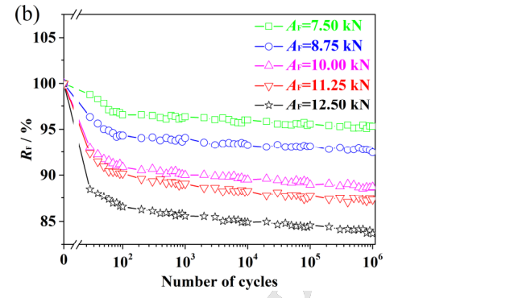
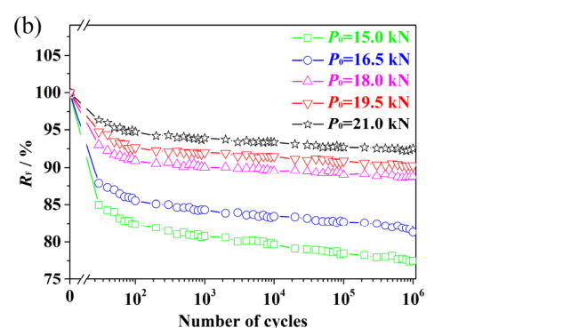

Liu 2017 (axial) — estudo de caso— case study
carga axial, varredura F0 x amplitude @30 Hzaxial load, F0 x amplitude sweep @30 Hz
Figura do artigoPaper figure


Figura(s) originais do artigo (recorte do PDF) — a fonte dos pontos que foram digitalizados.Original figure(s) from the paper (PDF crop) — the source of the digitized points.
Condições do ensaioTest conditions
| ReferênciaReference | Liu et al. (2017). Tribology Int. 115:432-451 · doi:10.1016/j.triboint.2017.05.037 |
| ParafusoBolt | M12x1.75 |
| Pré-carga F0Preload F0 | 15–21 kN |
| AmplitudeAmplitude | — |
| FrequênciaFrequency | 30 Hz |
| Família / nº de curvasFamily / curves | axial · 9 |
| MAE medianomedian | 0.018 |
Informações do artigo — aparato, corpo-de-prova, matriz de ensaiosPaper information — apparatus, specimen, test matrix
Liu 2017 (Tribology Int.) — M12 AXIAL dynamic-load self-loosening
Citation: Liu, Ouyang, Feng, Cai, Liu, Zhu, "Study on self-loosening of bolted joints excited by dynamic axial load", *Tribology International* 115 (2017) 432–451. DOI: 10.1016/j.triboint.2017.05.037 (CC-BY green OA via HAL hal-02398144) PDF: pdfs_open_access/liu2017_triboint_axial.pdf (= BAS_V2_papers/A.../Study on self-loosening of bolted joints excited by dynamic axial load.pdf)
Apparatus
- Axial (tension) dynamic-load excitation on a fatigue testing machine, 30 Hz, in air
at room temperature, up to 10^6 cycles per test.
- Clamp force measured with a load cell in the clamped stack (in series with the joint);
self-loosening tracked as R_F = clamping force / preload (%).
- Preload applied with a digital electronic torque wrench to a set clamp-force value.
- Post-test residual (breakaway) torque also recorded (Figs 5a/8a — not digitized).
- Thread surfaces examined by OM/SEM (adhesive + abrasive wear, delamination growing
with amplitude).
Specimen
- M12 × 1.75 high-fatigue-strength steel bolts (d1 = 10.106 mm, d2 = 10.863 mm,
P = 1.75 mm), grade 10.9-class.
- Variants: uncoated + PTFE / MoS2 / TiN coated bolts (coating study, Figs 13/16 —
not digitized).
Trial matrix
| Series | P0 (kN) | Axial amplitude A_F (kN) | Freq | Cycles | Digitized |
|---|---|---|---|---|---|
| Fig 5(b) preload sweep | 15.0 / 16.5 / 18.0 / 19.5 / 21.0 | 10.0 | 30 Hz | 10^6 | yes (5 curves) |
| Fig 8(b) amplitude sweep | 18.0 | 7.50 / 8.75 / 10.00 / 11.25 / 12.50 | 30 Hz | 10^6 | yes (4 new curves; 10.00 = Fig 5b 18 kN curve) |
| Fig 13 coatings | 18.0 | 10.0 | 30 Hz | 10^6 | no (secondary) |
| Fig 16 coating x preload | 18.0 / 21.5 | 10.0 | 30 Hz | 10^6 | no (secondary) |
Digitized curves
| CSV | Figure | Condition | pts | F/F0 end (10^6) |
|---|---|---|---|---|
| liu2017_axial_F0_15kN.csv | 5(b) | P0=15.0, A_F=10 | 16 | 0.772 |
| liu2017_axial_F0_16p5kN.csv | 5(b) | P0=16.5, A_F=10 | 14 | 0.812 |
| liu2017_axial_F0_18kN.csv | 5(b) | P0=18.0, A_F=10 | 12 | 0.885 |
| liu2017_axial_F0_19p5kN.csv | 5(b) | P0=19.5, A_F=10 | 12 | 0.905 |
| liu2017_axial_F0_21kN.csv | 5(b) | P0=21.0, A_F=10 | 13 | 0.923 |
| liu2017_axial_AF_7p5kN.csv | 8(b) | P0=18, A_F=7.50 | 12 | 0.952 |
| liu2017_axial_AF_8p75kN.csv | 8(b) | P0=18, A_F=8.75 | 11 | 0.925 |
| liu2017_axial_AF_11p25kN.csv | 8(b) | P0=18, A_F=11.25 | 10 | 0.872 |
| liu2017_axial_AF_12p5kN.csv | 8(b) | P0=18, A_F=12.50 | 11 | 0.840 |
Digitization caveats
- Log x-axis (broken at 0, then 10^2..10^6); points sampled per decade. First markers
are at ~30 cycles; the (0, 1.0) point is the nominal start.
- Marker-scatter reading error ±0.005 in F/F0 (axis resolution 5%/division, markers dense).
- No collapse stage: curves are two-stage (fast initial drop <10^2 cycles, then slow
quasi-log-linear tail to 10^6) — bolts do NOT back off at these conditions.
V2 calibration mapping
- PRIMARY source for the axial track (project next-priority #3). Use V2 FORCE mode:
step_cycle(F_amp=A_F...), NOT delta_amp.
- Stage I fast drop (cyclic plastic deformation of thread/bearing asperities) →
k_emb_scale. - Stage II slow log-linear tail (fretting wear between threads) →
k_creep_scale+
axial wear analogue of k_wear_scale_tr.
- Preload sweep (5 levels, fixed A_F): higher P0 → smaller loss (7.7% at 21 kN vs 22.8% at
15 kN after 10^6) — strong cross-condition constraint for one parameter set.
- Amplitude sweep (5 levels, fixed P0): drives slip-dissipation →
slip_onset_W,
surface_damage (c_D, W_ref) in the axial regime.
- Coating figures (not digitized) available for friction-coefficient modeling later.
Modelo vs dadoModel vs data
Cada card = uma curva digitalizada deste estudo: a linha é a previsão do modelo (config adotada, do store canônico) e os pontos são o dado medido; o badge traz o MAE.Each card = one digitized curve from this study: the line is the model prediction (adopted config, from the canonical store) and the dots are the measured data; the badge shows the MAE.
ReprodutibilidadeReproducibility
Cada card tem ↓ CSV (modelo + dado da curva). Os CSVs digitalizados originais ficam em Models/CALIBRATION_AND_VALIDATION/curve_library/digitized_csv/; a curva do modelo vem do store canônico (config adotada por fonte). Para reproduzir localmente:Each card has ↓ CSV (curve model + data). The original digitized CSVs live in Models/CALIBRATION_AND_VALIDATION/curve_library/digitized_csv/; the model curve comes from the canonical store (adopted per-source config). To reproduce locally:
Ver também o guia de uso do programa e a metodologia.See also the program usage guide and the methodology.